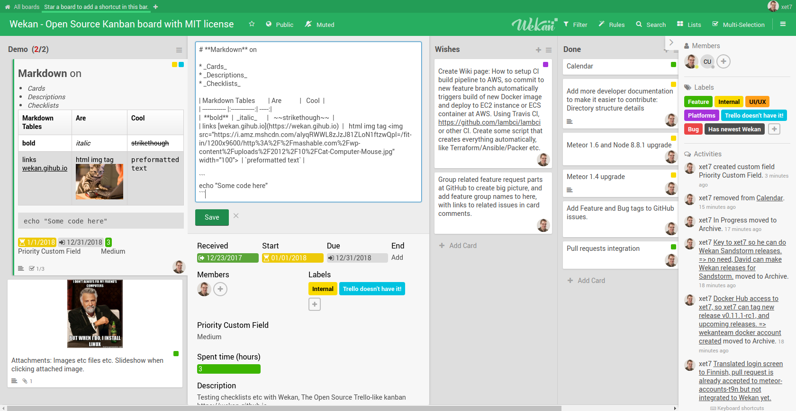
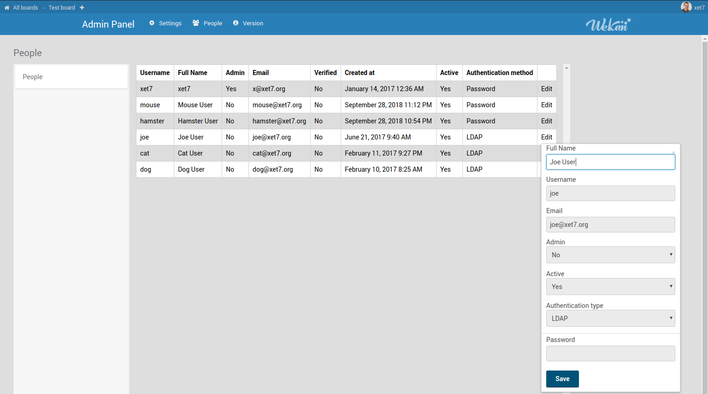

Wekan is Open Source kanban, that you can install to your laptop or server. You can keep all your data in your own control. You can also use some SaaS provider.

What was planned for 2018
At 2017-12-23 I did write about Plans for 2018. Many of those did get done, and some remaining are planned for remaining 2018 and new year 2019, with some additions to plans.
Done at 2018-11
Standalone and Sandstorm Wekan
- Calendar.
- Search.
- Custom Fields.
- IFTTT (If-this-then-then-that) Rules for automation, similar to Butler at Trello. This is visible only at Standalone Wekan currently, I think.

- Some Mobile Web improvements.
- And more, see ChangeLog for complete list.
Standalone Wekan
- LDAP.

- Have all settings (SMTP etc) in environment variables on Snap settings and Docker Compose file, no need to setup manually at Admin Panel. Email settings in Admin Panel were removed and then added back, and email password hidden in Admin Panel.
Plans for remaining 2018 and new year 2019
Standalone and Sandstorm Wekan
- Font size improvements.
- Scheduling events.
- Import/Export/Add/Remove fixes and additions.
- Bugfixes.
- More Mobile Web improvements.
- Provide different ways to store attachments.
Standalone Wekan
- Teams/Organizations admin, and User Admin additions.
- Top-level projects.
- Whitelabeling: Custom Logo, Custom CSS, Custom Product Name instead of Wekan, etc.
- Snap for other processor architectures like arm64, if possible.
- Friend:
- Sync Wekan calendar to Friend calendar.
- Friend login will login to Wekan too automatically.
- More supported databases, if possible.
Thanks to all for making Wekan possible
- CNCF / Linux Foundation for providing bare metal servers for development and downloads hosting.
- GitHub, Snap, Quay, Docker Hub, Sandstorm etc at all Wekan platforms for downloads and hosting for thousands of servers where Wekan is running.
- Everyone adding new GitHub issues about Wekan bugs and feature requests.
- Companies and individuals contributing features and fixes to Wekan as PRs, and adding bounties.
- Finnish Unix Users Group Foundation for providing grant for Wekan features development.
- Companies and individuals using my Wekan Commercial Support for support and new Wekan features, and being understanding with the delays. I really try to get everything implemented, development is not easy.
I currently do Wekan as nearly full-time work. I have not accepted any work offers for any non-Wekan full-time work. Because of your continuing support, I’m still maintaining Wekan. Thanks to all !
BR,
xet7